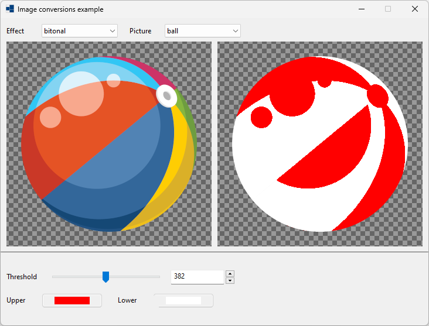
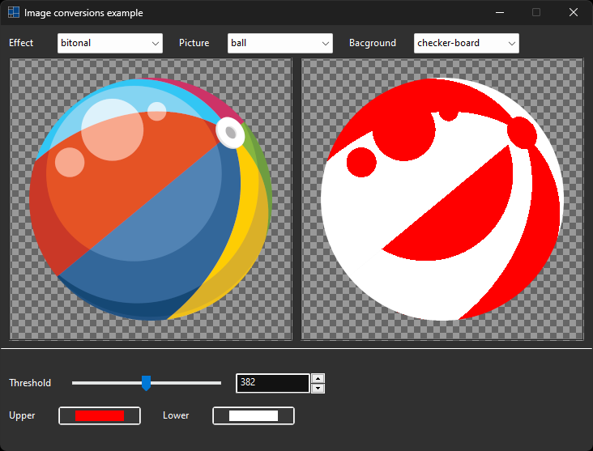
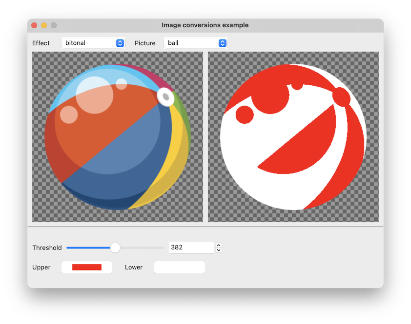
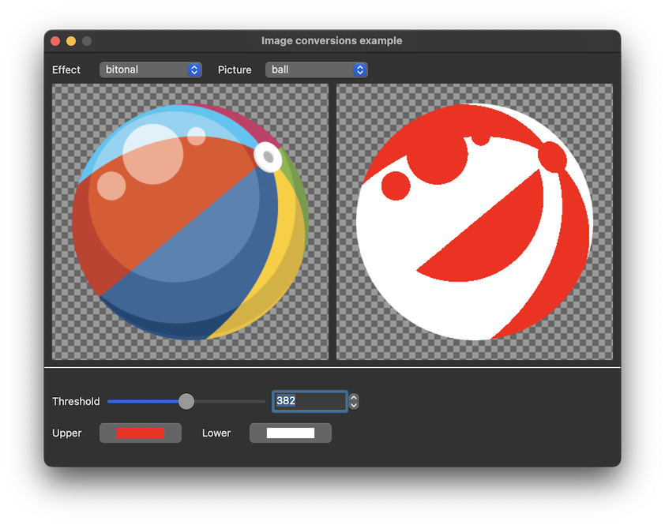
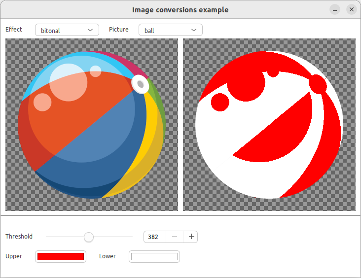
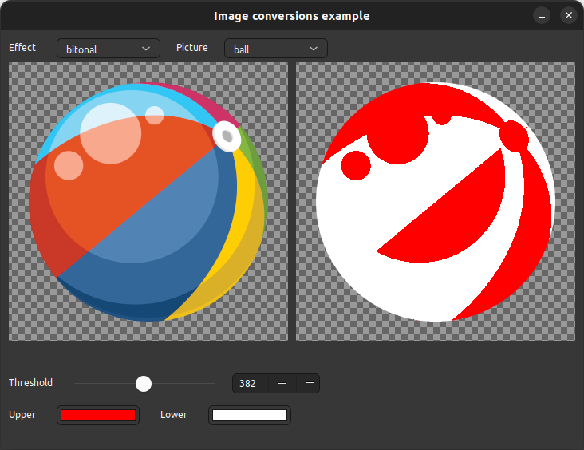

|
xtd
0.2.0
|
Loading...
Searching...
No Matches
image_converter.cpp
shows how to use xtd::drawing::graphics::image_converter class.
- Windows
- 

- macOS
- 

- Gnome
- 

#include "../properties/resources.hpp"
#include <xtd/xtd>
using namespace xtd;
using namespace xtd::drawing;
using namespace xtd::drawing::drawing_2d;
using namespace xtd::drawing::imaging;
using namespace xtd::drawing::imaging::effects;
using namespace xtd::forms;
namespace image_effector_example {
public:
static auto main() {
application::run(image_effector_example::form1 {});
}
form1() {
text("Image effects example");
form_border_style(forms::form_border_style::fixed_3d);
maximize_box(false);
client_size({730, 525});
bitonal_threshold_track_bar.tick_style(tick_style::none);
blur_horizontal_radius_track_bar.tick_style(tick_style::none);
blur_vertical_radius_track_bar.tick_style(tick_style::none);
brightness_percent_track_bar.tick_style(tick_style::none);
color_percent_track_bar.tick_style(tick_style::none);
color_extraction_threshold_track_bar.tick_style(tick_style::none);
color_substitution_threshold_track_bar.tick_style(tick_style::none);
contrast_percent_track_bar.tick_style(tick_style::none);
crop_x_track_bar.tick_style(tick_style::none);
crop_y_track_bar.tick_style(tick_style::none);
crop_width_track_bar.tick_style(tick_style::none);
crop_height_track_bar.tick_style(tick_style::none);
drop_shadow_horizontal_track_bar.tick_style(tick_style::none);
drop_shadow_vertical_track_bar.tick_style(tick_style::none);
drop_shadow_radius_track_bar.tick_style(tick_style::none);
gamma_correction_red_correction_track_bar.tick_style(tick_style::none);
gamma_correction_green_correction_track_bar.tick_style(tick_style::none);
gamma_correction_blue_correction_track_bar.tick_style(tick_style::none);
grayscale_percent_track_bar.tick_style(tick_style::none);
hue_rotate_percent_track_bar.tick_style(tick_style::none);
invert_percent_track_bar.tick_style(tick_style::none);
opacity_percent_track_bar.tick_style(tick_style::none);
posterize_levels_track_bar.tick_style(tick_style::none);
rescale_width_track_bar.tick_style(tick_style::none);
rescale_height_track_bar.tick_style(tick_style::none);
resize_x_track_bar.tick_style(tick_style::none);
resize_y_track_bar.tick_style(tick_style::none);
resize_width_track_bar.tick_style(tick_style::none);
resize_height_track_bar.tick_style(tick_style::none);
saturate_percent_track_bar.tick_style(tick_style::none);
sepia_percent_track_bar.tick_style(tick_style::none);
solarize_threshold_track_bar.tick_style(tick_style::none);
threshold_threshold_track_bar.tick_style(tick_style::none);
gamma_correction_red_correction_numeric_up_down.decimal_place(1);
gamma_correction_red_correction_numeric_up_down.increment(.1);
gamma_correction_green_correction_numeric_up_down.decimal_place(1);
gamma_correction_green_correction_numeric_up_down.increment(.1);
gamma_correction_blue_correction_numeric_up_down.decimal_place(1);
gamma_correction_blue_correction_numeric_up_down.increment(.1);
bitonal_panel.dock(xtd::forms::dock_style::fill);
blur_panel.dock(xtd::forms::dock_style::fill);
brightness_panel.dock(xtd::forms::dock_style::fill);
color_panel.dock(xtd::forms::dock_style::fill);
color_extraction_panel.dock(xtd::forms::dock_style::fill);
color_substitution_panel.dock(xtd::forms::dock_style::fill);
contrast_panel.dock(xtd::forms::dock_style::fill);
crop_panel.dock(xtd::forms::dock_style::fill);
disabled_panel.dock(xtd::forms::dock_style::fill);
drop_shadow_panel.dock(xtd::forms::dock_style::fill);
gamma_correction_panel.dock(xtd::forms::dock_style::fill);
grayscale_panel.dock(xtd::forms::dock_style::fill);
hue_rotate_panel.dock(xtd::forms::dock_style::fill);
invert_panel.dock(xtd::forms::dock_style::fill);
opacity_panel.dock(xtd::forms::dock_style::fill);
posterize_panel.dock(xtd::forms::dock_style::fill);
rescale_panel.dock(xtd::forms::dock_style::fill);
resize_panel.dock(xtd::forms::dock_style::fill);
rotate_flip_panel.dock(xtd::forms::dock_style::fill);
saturate_panel.dock(xtd::forms::dock_style::fill);
sepia_panel.dock(xtd::forms::dock_style::fill);
solarize_panel.dock(xtd::forms::dock_style::fill);
threshold_panel.dock(xtd::forms::dock_style::fill);
picures_panel.border_sides(xtd::forms::border_sides::bottom).border_style(xtd::forms::border_style::inset).dock(xtd::forms::dock_style::top);
effect_choice.selected_value_changed += {*this, &form1::on_effect_choice_selected_value_changed};
picture_choice.selected_value_changed += {*this, &form1::on_picture_choice_selected_value_changed};
bitonal_threshold_numeric_up_down.value_changed += [&] {bitonal_threshold_track_bar.value(as<int32>(bitonal_threshold_numeric_up_down.value()));};
bitonal_threshold_track_bar.value_changed += [&] {
bitonal_threshold_numeric_up_down.value(bitonal_threshold_track_bar.value());
update_pictures();
};
bitonal_upper_color_color_picker.color_picker_changed += [&] {update_pictures();};
bitonal_lower_color_color_picker.color_picker_changed += [&] {update_pictures();};
blur_horizontal_radius_numeric_up_down.value_changed += [&] {blur_horizontal_radius_track_bar.value(as<int32>(blur_horizontal_radius_numeric_up_down.value()));};
blur_horizontal_radius_track_bar.value_changed += [&] {
blur_horizontal_radius_numeric_up_down.value(blur_horizontal_radius_track_bar.value());
if (blur_sync_horizontal_and_vertical_check_box.checked()) blur_vertical_radius_track_bar.value(blur_horizontal_radius_track_bar.value());
update_pictures();
};
blur_vertical_radius_numeric_up_down.value_changed += [&] {blur_vertical_radius_track_bar.value(as<int32>(blur_vertical_radius_numeric_up_down.value()));};
blur_vertical_radius_track_bar.value_changed += [&] {
blur_vertical_radius_numeric_up_down.value(blur_vertical_radius_track_bar.value());
if (blur_sync_horizontal_and_vertical_check_box.checked()) blur_horizontal_radius_track_bar.value(blur_vertical_radius_track_bar.value());
update_pictures();
};
blur_expand_edge_check_box.checked_changed += [&] {update_pictures();};
brightness_percent_numeric_up_down.value_changed += [&] {brightness_percent_track_bar.value(as<int32>(brightness_percent_numeric_up_down.value()));};
brightness_percent_track_bar.value_changed += [&] {
brightness_percent_numeric_up_down.value(brightness_percent_track_bar.value());
update_pictures();
};
color_percent_numeric_up_down.value_changed += [&] {color_percent_track_bar.value(as<int32>(color_percent_numeric_up_down.value()));};
color_percent_track_bar.value_changed += [&] {
color_percent_numeric_up_down.value(color_percent_track_bar.value());
update_pictures();
};
color_color_color_picker.color_picker_changed += [&] {update_pictures();};
color_extraction_threshold_numeric_up_down.value_changed += [&] {color_extraction_threshold_track_bar.value(as<int32>(color_extraction_threshold_numeric_up_down.value()));};
color_extraction_threshold_track_bar.value_changed += [&] {
color_extraction_threshold_numeric_up_down.value(color_extraction_threshold_track_bar.value());
update_pictures();
};
color_extraction_extraction_color_color_picker.color_picker_changed += [&] {update_pictures();};
color_extraction_other_pixels_color_color_picker.color_picker_changed += [&] {update_pictures();};
posterize_levels_numeric_up_down.value_changed += [&] {posterize_levels_track_bar.value(as<int32>(posterize_levels_numeric_up_down.value()));};
posterize_levels_track_bar.value_changed += [&] {
posterize_levels_numeric_up_down.value(posterize_levels_track_bar.value());
update_pictures();
};
color_substitution_threshold_numeric_up_down.value_changed += [&] {color_substitution_threshold_track_bar.value(as<int32>(color_substitution_threshold_numeric_up_down.value()));};
color_substitution_threshold_track_bar.value_changed += [&] {
color_substitution_threshold_numeric_up_down.value(color_substitution_threshold_track_bar.value());
update_pictures();
};
color_substitution_source_color_color_picker.color_picker_changed += [&] {update_pictures();};
color_substitution_new_color_color_picker.color_picker_changed += [&] {update_pictures();};
contrast_percent_numeric_up_down.value_changed += [&] {contrast_percent_track_bar.value(as<int32>(contrast_percent_numeric_up_down.value()));};
contrast_percent_track_bar.value_changed += [&] {
contrast_percent_numeric_up_down.value(contrast_percent_track_bar.value());
update_pictures();
};
crop_x_numeric_up_down.value_changed += [&] {
crop_x_track_bar.value(as<int32>(crop_x_numeric_up_down.value()));
};
crop_x_track_bar.value_changed += [&] {
crop_x_numeric_up_down.value(crop_x_track_bar.value());
update_pictures();
};
crop_y_numeric_up_down.value_changed += [&] {
crop_y_track_bar.value(as<int32>(crop_y_numeric_up_down.value()));
};
crop_y_track_bar.value_changed += [&] {
crop_y_numeric_up_down.value(crop_y_track_bar.value());
update_pictures();
};
crop_width_numeric_up_down.value_changed += [&] {
crop_width_track_bar.value(as<int32>(crop_width_numeric_up_down.value()));
};
crop_width_track_bar.value_changed += [&] {
crop_x_numeric_up_down.set_range(crop_width_track_bar.value() - original_image().width(), 0);
crop_x_track_bar.set_range(crop_width_track_bar.value() - original_image().width(), 0);
crop_width_numeric_up_down.value(crop_width_track_bar.value());
update_pictures();
};
crop_height_numeric_up_down.value_changed += [&] {
crop_height_track_bar.value(as<int32>(crop_height_numeric_up_down.value()));
};
crop_height_track_bar.value_changed += [&] {
crop_y_numeric_up_down.set_range(crop_height_track_bar.value() - original_image().height(), 0);
crop_y_track_bar.set_range(crop_height_track_bar.value() - original_image().height(), 0);
crop_height_numeric_up_down.value(crop_height_track_bar.value());
update_pictures();
};
disabled_switch_button.checked_changed += [&] {update_pictures();};
drop_shadow_radius_numeric_up_down.value_changed += [&] {drop_shadow_radius_track_bar.value(as<int32>(drop_shadow_radius_numeric_up_down.value()));};
drop_shadow_radius_track_bar.value_changed += [&] {
drop_shadow_radius_numeric_up_down.value(drop_shadow_radius_track_bar.value());
update_pictures();
};
drop_shadow_horizontal_numeric_up_down.value_changed += [&] {drop_shadow_horizontal_track_bar.value(as<int32>(drop_shadow_horizontal_numeric_up_down.value()));};
drop_shadow_horizontal_track_bar.value_changed += [&] {
drop_shadow_horizontal_numeric_up_down.value(drop_shadow_horizontal_track_bar.value());
update_pictures();
};
drop_shadow_vertical_numeric_up_down.value_changed += [&] {drop_shadow_vertical_track_bar.value(as<int32>(drop_shadow_vertical_numeric_up_down.value()));};
drop_shadow_vertical_track_bar.value_changed += [&] {
drop_shadow_vertical_numeric_up_down.value(drop_shadow_vertical_track_bar.value());
update_pictures();
};
drop_shadow_color_color_picker.color_picker_changed += [&] {update_pictures();};
gamma_correction_red_correction_numeric_up_down.value_changed += [&] {gamma_correction_red_correction_track_bar.value(as<int32>(gamma_correction_red_correction_numeric_up_down.value() * 10));};
gamma_correction_red_correction_track_bar.value_changed += [&] {
gamma_correction_red_correction_numeric_up_down.value(gamma_correction_red_correction_track_bar.value() / 10.0);
update_pictures();
};
gamma_correction_green_correction_numeric_up_down.value_changed += [&] {gamma_correction_green_correction_track_bar.value(as<int32>(gamma_correction_green_correction_numeric_up_down.value() * 10));};
gamma_correction_green_correction_track_bar.value_changed += [&] {
gamma_correction_green_correction_numeric_up_down.value(gamma_correction_green_correction_track_bar.value() / 10.0);
update_pictures();
};
gamma_correction_blue_correction_numeric_up_down.value_changed += [&] {gamma_correction_blue_correction_track_bar.value(as<int32>(gamma_correction_blue_correction_numeric_up_down.value() * 10));};
gamma_correction_blue_correction_track_bar.value_changed += [&] {
gamma_correction_blue_correction_numeric_up_down.value(gamma_correction_blue_correction_track_bar.value() / 10.0);
update_pictures();
};
grayscale_percent_numeric_up_down.value_changed += [&] {grayscale_percent_track_bar.value(as<int32>(grayscale_percent_numeric_up_down.value()));};
grayscale_percent_track_bar.value_changed += [&] {
grayscale_percent_numeric_up_down.value(grayscale_percent_track_bar.value());
update_pictures();
};
hue_rotate_percent_numeric_up_down.value_changed += [&] {hue_rotate_percent_track_bar.value(as<int32>(hue_rotate_percent_numeric_up_down.value()));};
hue_rotate_percent_track_bar.value_changed += [&] {
hue_rotate_percent_numeric_up_down.value(hue_rotate_percent_track_bar.value());
update_pictures();
};
invert_percent_numeric_up_down.value_changed += [&] {invert_percent_track_bar.value(as<int32>(invert_percent_numeric_up_down.value()));};
invert_percent_track_bar.value_changed += [&] {
invert_percent_numeric_up_down.value(invert_percent_track_bar.value());
update_pictures();
};
opacity_percent_numeric_up_down.value_changed += [&] {opacity_percent_track_bar.value(as<int32>(opacity_percent_numeric_up_down.value()));};
opacity_percent_track_bar.value_changed += [&] {
opacity_percent_numeric_up_down.value(opacity_percent_track_bar.value());
update_pictures();
};
rescale_width_numeric_up_down.value_changed += [&] {rescale_width_track_bar.value(as<int32>(rescale_width_numeric_up_down.value()));};
rescale_width_track_bar.value_changed += [&] {
rescale_width_numeric_up_down.value(rescale_width_track_bar.value());
if (rescale_maintain_aspect_ratio_check_box.checked()) rescale_height_numeric_up_down.value(as<int>(rescale_width_track_bar.value() / rescale_aspect_ratio));
update_pictures();
};
rescale_height_numeric_up_down.value_changed += [&] {rescale_height_track_bar.value(as<int32>(rescale_height_numeric_up_down.value()));};
rescale_height_track_bar.value_changed += [&] {
rescale_height_numeric_up_down.value(rescale_height_track_bar.value());
if (rescale_maintain_aspect_ratio_check_box.checked()) rescale_width_numeric_up_down.value(as<int>(rescale_height_track_bar.value() * rescale_aspect_ratio));
update_pictures();
};
resize_x_numeric_up_down.value_changed += [&] {
resize_x_track_bar.value(as<int32>(resize_x_numeric_up_down.value()));
};
resize_x_track_bar.value_changed += [&] {
resize_x_numeric_up_down.value(resize_x_track_bar.value());
update_pictures();
};
resize_y_numeric_up_down.value_changed += [&] {
resize_y_track_bar.value(as<int32>(resize_y_numeric_up_down.value()));
};
resize_y_track_bar.value_changed += [&] {
resize_y_numeric_up_down.value(resize_y_track_bar.value());
update_pictures();
};
resize_width_numeric_up_down.value_changed += [&] {
resize_width_track_bar.value(as<int32>(resize_width_numeric_up_down.value()));
};
resize_width_track_bar.value_changed += [&] {
if (resize_width_track_bar.value() < original_image().width()) {
resize_x_numeric_up_down.set_range(resize_width_track_bar.value() - original_image().width(), 0);
resize_x_track_bar.set_range(resize_width_track_bar.value() - original_image().width(), 0);
} else if (resize_width_track_bar.value() == original_image().width()) {
resize_x_numeric_up_down.set_range(0, 0);
resize_x_track_bar.set_range(0, 0);
} else if (resize_width_track_bar.value() > original_image().width()) {
resize_x_numeric_up_down.set_range(0, resize_width_track_bar.value() - original_image().width());
resize_x_track_bar.set_range(0, resize_width_track_bar.value() - original_image().width());
}
resize_width_numeric_up_down.value(resize_width_track_bar.value());
if (resize_maintain_aspect_ratio_check_box.checked()) resize_height_numeric_up_down.value(as<int>(resize_width_track_bar.value() / resize_aspect_ratio));
update_pictures();
};
resize_height_numeric_up_down.value_changed += [&] {
resize_height_track_bar.value(as<int32>(resize_height_numeric_up_down.value()));
};
resize_height_track_bar.value_changed += [&] {
if (resize_height_track_bar.value() < original_image().height()) {
resize_y_numeric_up_down.set_range(resize_height_track_bar.value() - original_image().height(), 0);
resize_y_track_bar.set_range(resize_height_track_bar.value() - original_image().height(), 0);
} else if (resize_height_track_bar.value() == original_image().height()) {
resize_y_numeric_up_down.set_range(0, 0);
resize_y_track_bar.set_range(0, 0);
} else if (resize_height_track_bar.value() > original_image().height()) {
resize_y_numeric_up_down.set_range(0, resize_height_track_bar.value() - original_image().height());
resize_y_track_bar.set_range(0, resize_height_track_bar.value() - original_image().height());
}
resize_height_numeric_up_down.value(resize_height_track_bar.value());
if (resize_maintain_aspect_ratio_check_box.checked()) resize_width_numeric_up_down.value(as<int>(resize_height_track_bar.value() * resize_aspect_ratio));
update_pictures();
};
resize_fill_color_color_picker.color_picker_changed += [&] {update_pictures();};
resize_auto_determine_fill_color_ratio_check_box.checked_changed += [&] {
resize_fill_color_color_picker.enabled(!resize_auto_determine_fill_color_ratio_check_box.checked());
update_pictures();
};
rotate_flip_choice.selected_index_changed += [&] {update_pictures();};
saturate_percent_numeric_up_down.value_changed += [&] {saturate_percent_track_bar.value(as<int32>(saturate_percent_numeric_up_down.value()));};
saturate_percent_track_bar.value_changed += [&] {
saturate_percent_numeric_up_down.value(saturate_percent_track_bar.value());
update_pictures();
};
sepia_percent_numeric_up_down.value_changed += [&] {sepia_percent_track_bar.value(as<int32>(sepia_percent_numeric_up_down.value()));};
sepia_percent_track_bar.value_changed += [&] {
sepia_percent_numeric_up_down.value(sepia_percent_track_bar.value());
update_pictures();
};
solarize_threshold_numeric_up_down.value_changed += [&] {solarize_threshold_track_bar.value(as<int32>(solarize_threshold_numeric_up_down.value()));};
solarize_threshold_track_bar.value_changed += [&] {
solarize_threshold_numeric_up_down.value(solarize_threshold_track_bar.value());
update_pictures();
};
threshold_threshold_numeric_up_down.value_changed += [&] {threshold_threshold_track_bar.value(as<int32>(threshold_threshold_numeric_up_down.value()));};
threshold_threshold_track_bar.value_changed += [&] {
threshold_threshold_numeric_up_down.value(threshold_threshold_track_bar.value());
update_pictures();
};
original_picture_panel.double_buffered(true);
original_picture_panel.paint += {*this, &form1::on_panel_image_paint};
adjusted_picture_panel.double_buffered(true);
adjusted_picture_panel.paint += {*this, &form1::on_panel_image_paint};
background_choice.selected_value_changed += [&] {
if (background_choice.selected_item() == "checker-board") {
original_picture_panel.back_color(colors::gray());
adjusted_picture_panel.back_color(colors::gray());
} else if (background_choice.selected_item() == "black") {
original_picture_panel.back_color(colors::black());
adjusted_picture_panel.back_color(colors::black());
} else if (background_choice.selected_item() == "white") {
original_picture_panel.back_color(colors::white());
adjusted_picture_panel.back_color(colors::white());
} else {
original_picture_panel.back_color(system_colors::control());
adjusted_picture_panel.back_color(system_colors::control());
}
update_pictures();
};
effect_choice.selected_item("bitonal");
picture_choice.selected_item("ball");
background_choice.selected_item("checker-board");
}
private:
return image;
}
void on_picture_choice_selected_value_changed() {
original_image_ = as<bitmap>(picture_choice.selected_item().tag());
reset_inputs();
update_pictures();
}
void on_effect_choice_selected_value_changed() {
bitonal_panel.visible(effect_choice.selected_item() == "bitonal");
blur_panel.visible(effect_choice.selected_item() == "blur");
brightness_panel.visible(effect_choice.selected_item() == "brightness");
color_panel.visible(effect_choice.selected_item() == "color");
color_extraction_panel.visible(effect_choice.selected_item() == "color-extraction");
color_substitution_panel.visible(effect_choice.selected_item() == "color-substitution");
contrast_panel.visible(effect_choice.selected_item() == "contrast");
crop_panel.visible(effect_choice.selected_item() == "crop");
disabled_panel.visible(effect_choice.selected_item() == "disabled");
drop_shadow_panel.visible(effect_choice.selected_item() == "drop-shadow");
gamma_correction_panel.visible(effect_choice.selected_item() == "gamma-correction");
grayscale_panel.visible(effect_choice.selected_item() == "grayscale");
hue_rotate_panel.visible(effect_choice.selected_item().value() == "hue-rotate");
invert_panel.visible(effect_choice.selected_item().value() == "invert");
opacity_panel.visible(effect_choice.selected_item().value() == "opacity");
posterize_panel.visible(effect_choice.selected_item() == "posterize");
rescale_panel.visible(effect_choice.selected_item().value() == "rescale");
resize_panel.visible(effect_choice.selected_item().value() == "resize");
rotate_flip_panel.visible(effect_choice.selected_item().value() == "rotate-flip");
saturate_panel.visible(effect_choice.selected_item().value() == "saturate");
sepia_panel.visible(effect_choice.selected_item().value() == "sepia");
solarize_panel.visible(effect_choice.selected_item() == "solarize");
threshold_panel.visible(effect_choice.selected_item().value() == "threshold");
reset_inputs();
update_pictures();
}
if (background_choice.selected_item() == "checker-board") e.graphics().fill_rectangle(hatch_brush {xtd::drawing::drawing_2d::hatch_style::wide_checker_board, xtd::drawing::color::from_argb(0x66, 0x66, 0x66), xtd::drawing::color::from_argb(0x99, 0x99, 0x99)}, e.clip_rectangle());
const auto& img = sender == original_picture_panel ? original_image() : adjusted_image;
e.graphics().draw_image(img, rectangle {{(as<control>(sender).width() - img.width()) / 2, (as<control>(sender).height() - img.height()) / 2}, img.size()});
control_paint::draw_border_from_back_color(as<control>(sender), e.graphics(), xtd::forms::border_style::theme, xtd::forms::border_sides::all, as<control>(sender).back_color(), e.clip_rectangle());
}
return original_image_;
}
void reset_inputs() {
original_image_ = as<bitmap>(picture_choice.selected_item().tag());
bitonal_threshold_track_bar.value(382);
bitonal_upper_color_color_picker.color(color::red);
bitonal_lower_color_color_picker.color(color::white);
blur_horizontal_radius_track_bar.value(10);
blur_vertical_radius_track_bar.value(10);
blur_expand_edge_check_box.checked(true);
blur_sync_horizontal_and_vertical_check_box.checked(true);
brightness_percent_track_bar.value(125);
color_percent_track_bar.value(200);
color_color_color_picker.color(color::red);
color_extraction_threshold_track_bar.value(260);
color_extraction_extraction_color_color_picker.color(color::green);
color_extraction_other_pixels_color_color_picker.color(color::white);
color_substitution_threshold_track_bar.value(260);
color_substitution_source_color_color_picker.color(color::green);
color_substitution_new_color_color_picker.color(color::blue);
contrast_percent_track_bar.value(200);
crop_height_numeric_up_down.set_range(1, original_image().height());
crop_width_numeric_up_down.set_range(1, original_image().width());
crop_height_track_bar.set_range(1, original_image().height());
crop_width_track_bar.set_range(1, original_image().width());
crop_width_track_bar.maximum(original_image_.width());
crop_width_track_bar.value(original_image_.width() - 50);
crop_height_track_bar.maximum(original_image_.height());
crop_height_track_bar.value(original_image_.height() - 50);
crop_x_track_bar.value(-25);
crop_y_track_bar.value(-25);
disabled_switch_button.checked(true);
drop_shadow_radius_track_bar.value(8);
drop_shadow_horizontal_track_bar.value(16);
drop_shadow_vertical_track_bar.value(16);
drop_shadow_color_color_picker.alpha_color(true);
drop_shadow_color_color_picker.color(color::black);
gamma_correction_red_correction_track_bar.value(20);
gamma_correction_green_correction_track_bar.value(16);
gamma_correction_blue_correction_track_bar.value(8);
grayscale_percent_track_bar.value(100);
hue_rotate_percent_track_bar.value(90);
invert_percent_track_bar.value(100);
opacity_percent_track_bar.value(50);
posterize_levels_track_bar.value(2);
rescale_maintain_aspect_ratio_check_box.checked(false);
rescale_aspect_ratio = as<double>(original_image().width()) / original_image().height();
rescale_width_numeric_up_down.value(original_image_.width());
rescale_width_numeric_up_down.value(original_image_.height());
rescale_maintain_aspect_ratio_check_box.checked(true);
rescale_width_track_bar.value(original_image().size().width / 5 * 4);
resize_maintain_aspect_ratio_check_box.checked(false);
resize_height_numeric_up_down.set_range(1, original_image().height() * 2);
resize_width_numeric_up_down.set_range(1, original_image().width() * 2);
resize_height_track_bar.set_range(1, original_image().height() * 2);
resize_width_track_bar.set_range(1, original_image().width() * 2);
resize_aspect_ratio = as<double>(original_image().width()) / original_image().height();
resize_maintain_aspect_ratio_check_box.checked(true);
resize_width_track_bar.value(original_image().width() * 4 / 5);
resize_fill_color_color_picker.alpha_color(true);
resize_auto_determine_fill_color_ratio_check_box.checked(false);
resize_fill_color_color_picker.color(color::transparent);
rotate_flip_choice.selected_index(6);
saturate_percent_track_bar.value(300);
sepia_percent_track_bar.value(100);
solarize_threshold_track_bar.value(128);
threshold_threshold_track_bar.value(382);
}
void update_pictures() {
original_picture_panel.invalidate();
if (effect_choice.selected_item() == "bitonal") adjusted_image = image_effector::set_effect(original_image(), bitonal_effect {bitonal_threshold_track_bar.value(), bitonal_upper_color_color_picker.color(), bitonal_lower_color_color_picker.color()});
else if (effect_choice.selected_item() == "blur") adjusted_image = image_effector::set_effect(original_image(), blur_effect {blur_horizontal_radius_track_bar.value(), blur_vertical_radius_track_bar.value(), blur_expand_edge_check_box.checked()});
else if (effect_choice.selected_item() == "brightness") adjusted_image = image_effector::set_effect(original_image(), brightness_effect {brightness_percent_track_bar.value() / 100.0});
else if (effect_choice.selected_item() == "color") adjusted_image = image_effector::set_effect(original_image(), color_effect {color_color_color_picker.color(), color_percent_track_bar.value() / 100.0});
else if (effect_choice.selected_item() == "color-extraction") adjusted_image = image_effector::set_effect(original_image(), color_extraction_effect {color_extraction_threshold_track_bar.value(), color_extraction_extraction_color_color_picker.color(), color_extraction_other_pixels_color_color_picker.color()});
else if (effect_choice.selected_item() == "color-substitution") adjusted_image = image_effector::set_effect(original_image(), color_substitution_effect {color_substitution_threshold_track_bar.value(), color_substitution_source_color_color_picker.color(), color_substitution_new_color_color_picker.color()});
else if (effect_choice.selected_item() == "contrast") adjusted_image = image_effector::set_effect(original_image(), contrast_effect {contrast_percent_track_bar.value() / 100.0});
else if (effect_choice.selected_item() == "crop") adjusted_image = image_effector::set_effect(original_image(), crop_effect {rectangle {math::abs(crop_x_track_bar.value()), math::abs(crop_y_track_bar.value()), crop_width_track_bar.value(), crop_height_track_bar.value()}});
else if (effect_choice.selected_item() == "disabled") adjusted_image = disabled_switch_button.checked() ? bitmap {image_effector::set_effect(original_image(), disabled_effect {adjusted_picture_panel.back_color()})} : original_image();
else if (effect_choice.selected_item() == "drop-shadow") adjusted_image = image_effector::set_effect(original_image(), drop_shadow_effect {drawing::size {drop_shadow_horizontal_track_bar.value(), drop_shadow_vertical_track_bar.value()}, drop_shadow_radius_track_bar.value(), drop_shadow_color_color_picker.color()});
else if (effect_choice.selected_item() == "gamma-correction") adjusted_image = image_effector::set_effect(original_image(), gamma_correction_effect {gamma_correction_red_correction_track_bar.value() / 10.0, gamma_correction_green_correction_track_bar.value() / 10.0, gamma_correction_blue_correction_track_bar.value() / 10.0});
else if (effect_choice.selected_item() == "grayscale") adjusted_image = image_effector::set_effect(original_image(), grayscale_effect {grayscale_percent_track_bar.value() / 100.0});
else if (effect_choice.selected_item() == "hue-rotate")adjusted_image = image_effector::set_effect(original_image(), hue_rotate_effect {hue_rotate_percent_track_bar.value()});
else if (effect_choice.selected_item() == "invert") adjusted_image = image_effector::set_effect(original_image(), invert_effect {invert_percent_track_bar.value() / 100.0});
else if (effect_choice.selected_item() == "opacity") adjusted_image = image_effector::set_effect(original_image(), opacity_effect {opacity_percent_track_bar.value() / 100.0});
else if (effect_choice.selected_item() == "posterize") adjusted_image = image_effector::set_effect(original_image(), posterize_effect {posterize_levels_track_bar.value()});
else if (effect_choice.selected_item() == "rescale") adjusted_image = image_converter::rescale(original_image(), {rescale_width_track_bar.value(), rescale_height_track_bar.value()});
else if (effect_choice.selected_item() == "resize") adjusted_image = image_effector::set_effect(original_image(), resize_auto_determine_fill_color_ratio_check_box.checked() ? resize_effect {rectangle {math::abs(resize_x_track_bar.value()), math::abs(resize_y_track_bar.value()), resize_width_track_bar.value(), resize_height_track_bar.value()}, resize_auto_determine_fill_color_ratio_check_box.checked()} : resize_effect {rectangle {math::abs(resize_x_track_bar.value()), math::abs(resize_y_track_bar.value()), resize_width_track_bar.value(), resize_height_track_bar.value()}, resize_fill_color_color_picker.color()});
else if (effect_choice.selected_item() == "rotate-flip") adjusted_image = image_converter::rotate_flip(original_image(), as<rotate_flip_type>(rotate_flip_choice.selected_item().tag()));
else if (effect_choice.selected_item() == "saturate") adjusted_image = image_effector::set_effect(original_image(), saturate_effect {saturate_percent_track_bar.value() / 100.0});
else if (effect_choice.selected_item() == "sepia") adjusted_image = image_effector::set_effect(original_image(), sepia_effect {sepia_percent_track_bar.value() / 100.0});
else if (effect_choice.selected_item() == "solarize") adjusted_image = image_effector::set_effect(original_image(), solarize_effect {solarize_threshold_track_bar.value()});
else if (effect_choice.selected_item() == "threshold") adjusted_image = image_effector::set_effect(original_image(), threshold_effect {threshold_threshold_track_bar.value()});
else adjusted_image = original_image();
adjusted_picture_panel.invalidate();
}
image original_image_ = properties::resources::pineapple();
image adjusted_image = properties::resources::pineapple();
double rescale_aspect_ratio = as<double>(original_image().size().width) / original_image().size().height;
double resize_aspect_ratio = as<double>(original_image().size().width) / original_image().size().height;
track_bar bitonal_threshold_track_bar = track_bar::create(bitonal_panel, 382, 0, 3 * byte_object::max_value, {80, 30}, {200, 25});
numeric_up_down bitonal_threshold_numeric_up_down = numeric_up_down::create(bitonal_panel, 382, 0, 3 * byte_object::max_value, {290, 30}, {110, 25});
label bitonal_upper_color_label = label::create(bitonal_panel, "Upper", {10, 74}, {50, 23});
color_picker bitonal_upper_color_color_picker = color_picker::create(bitonal_panel, color::green, {70, 70});
label bitonal_lower_color_label = label::create(bitonal_panel, "Lower", {200, 74}, {70, 23});
color_picker bitonal_lower_color_color_picker = color_picker::create(bitonal_panel, color::white, {260, 70});
panel blur_panel = panel::create(*this, {0, 0}, {730, 170});
label blur_horizontal_radius_label = label::create(blur_panel, "Horizontal radius", {10, 14}, {120, 23});
track_bar blur_horizontal_radius_track_bar = track_bar::create(blur_panel, 10, 0, 100, {140, 10}, {200, 25});
numeric_up_down blur_horizontal_radius_numeric_up_down = numeric_up_down::create(blur_panel, 10, 0, 100, {360, 10}, {130, 25});
label blur_vertical_radius_label = label::create(blur_panel, "Vertical radius", {10, 54}, {150, 23});
track_bar blur_vertical_radius_track_bar = track_bar::create(blur_panel, 10, 0, 100, {140, 50}, {200, 25});
numeric_up_down blur_vertical_radius_numeric_up_down = numeric_up_down::create(blur_panel, 10, 0, 100, {360, 50}, {130, 25});
check_box blur_expand_edge_check_box = check_box::create(blur_panel, "Expand edge", {10, 90}, {120, 23});
check_box blur_sync_horizontal_and_vertical_check_box = check_box::create(blur_panel, "Synchronise horizontal and vertical radius", check_state::checked, {140, 90}, {300, 23});
panel brightness_panel = panel::create(*this, {0, 0}, {730, 170});
label brightness_percent_label = label::create(brightness_panel, "Percent", {10, 54}, {70, 23});
track_bar brightness_percent_track_bar = track_bar::create(brightness_panel, 125, 0, 200, {80, 50}, {200, 25});
numeric_up_down brightness_percent_numeric_up_down = numeric_up_down::create(brightness_panel, 125, 0, 200, {290, 50}, {110, 25});
panel color_panel = panel::create(*this, {0, 0}, {730, 170});
label color_percent_label = label::create(color_panel, "Percent", {10, 34}, {70, 23});
track_bar color_percent_track_bar = track_bar::create(color_panel, 200, 0, 200, {80, 30}, {200, 25});
numeric_up_down color_percent_numeric_up_down = numeric_up_down::create(color_panel, 200, 0, 200, {290, 30}, {110, 25});
label color_color_label = label::create(color_panel, "Color", {10, 74}, {50, 23});
color_picker color_color_color_picker = color_picker::create(color_panel, color::red, {70, 70});
panel color_extraction_panel = panel::create(*this, {0, 0}, {730, 170});
label color_extraction_threshold_label = label::create(color_extraction_panel, "Threshold", {10, 34}, {70, 23});
track_bar color_extraction_threshold_track_bar = track_bar::create(color_extraction_panel, 260, 0, 3 * byte_object::max_value, {80, 30}, {200, 25});
numeric_up_down color_extraction_threshold_numeric_up_down = numeric_up_down::create(color_extraction_panel, 260, 0, 3 * byte_object::max_value, {290, 30}, {110, 25});
label color_extraction_extraction_color_label = label::create(color_extraction_panel, "Extraction color", {10, 74}, {100, 23});
color_picker color_extraction_extraction_color_color_picker = color_picker::create(color_extraction_panel, color::green, {120, 70});
label color_extraction_other_pixels_color_label = label::create(color_extraction_panel, "Other pixels color", {250, 74}, {110, 23});
color_picker color_extraction_other_pixels_color_color_picker = color_picker::create(color_extraction_panel, color::white, {370, 70});
panel color_substitution_panel = panel::create(*this, {0, 0}, {730, 170});
label color_substitution_threshold_label = label::create(color_substitution_panel, "Threshold", {10, 34}, {70, 23});
track_bar color_substitution_threshold_track_bar = track_bar::create(color_substitution_panel, 260, 0, 3 * byte_object::max_value, {80, 30}, {200, 25});
numeric_up_down color_substitution_threshold_numeric_up_down = numeric_up_down::create(color_substitution_panel, 260, 0, 3 * byte_object::max_value, {290, 30}, {110, 25});
label color_substitution_source_color_label = label::create(color_substitution_panel, "Extraction color", {10, 74}, {100, 23});
color_picker color_substitution_source_color_color_picker = color_picker::create(color_substitution_panel, color::green, {120, 70});
label color_substitution_new_color_label = label::create(color_substitution_panel, "Other pixels color", {250, 74}, {110, 23});
color_picker color_substitution_new_color_color_picker = color_picker::create(color_substitution_panel, color::blue, {370, 70});
panel contrast_panel = panel::create(*this, {0, 0}, {730, 170});
label contrast_percent_label = label::create(contrast_panel, "Percent", {10, 54}, {70, 23});
track_bar contrast_percent_track_bar = track_bar::create(contrast_panel, 200, 0, 400, {80, 50}, {200, 25});
numeric_up_down contrast_percent_numeric_up_down = numeric_up_down::create(contrast_panel, 200, 0, 400, {290, 50}, {110, 25});
panel crop_panel = panel::create(*this, {0, 0}, {730, 170});
label crop_x_label = label::create(crop_panel, "x", {10, 34}, {70, 23});
track_bar crop_x_track_bar = track_bar::create(crop_panel, {80, 30}, {160, 25});
numeric_up_down crop_x_numeric_up_down = numeric_up_down::create(crop_panel, {250, 30}, {110, 25});
label crop_y_label = label::create(crop_panel, "y", {375, 34}, {70, 23});
track_bar crop_y_track_bar = track_bar::create(crop_panel, {440, 30}, {160, 25});
numeric_up_down crop_y_numeric_up_down = numeric_up_down::create(crop_panel, {610, 30}, {110, 25});
label crop_width_label = label::create(crop_panel, "width", {10, 74}, {70, 23});
track_bar crop_width_track_bar = track_bar::create(crop_panel, {80, 70}, {160, 25});
numeric_up_down crop_width_numeric_up_down = numeric_up_down::create(crop_panel, {250, 70}, {110, 25});
label crop_height_label = label::create(crop_panel, "height", {375, 74}, {70, 23});
track_bar crop_height_track_bar = track_bar::create(crop_panel, {440, 70}, {160, 25});
numeric_up_down crop_height_numeric_up_down = numeric_up_down::create(crop_panel, {610, 70}, {110, 25});
panel disabled_panel = panel::create(*this, {0, 0}, {730, 170});
label disabled_label = label::create(disabled_panel, "Disabled", {10, 54}, {60, 23});
panel drop_shadow_panel = panel::create(*this, {0, 0}, {730, 170});
label drop_shadow_horizontal_label = label::create(drop_shadow_panel, "Horizontal", {10, 14}, {70, 23});
track_bar drop_shadow_horizontal_track_bar = track_bar::create(drop_shadow_panel, 16, -50, 50, {80, 10}, {160, 25});
numeric_up_down drop_shadow_horizontal_numeric_up_down = numeric_up_down::create(drop_shadow_panel, 16, -50, 50, {250, 10}, {110, 25});
label drop_shadow_vertical_label = label::create(drop_shadow_panel, "Vertical", {375, 14}, {70, 23});
track_bar drop_shadow_vertical_track_bar = track_bar::create(drop_shadow_panel, 16, -50, 50, {440, 10}, {160, 25});
numeric_up_down drop_shadow_vertical_numeric_up_down = numeric_up_down::create(drop_shadow_panel, 16, -50, 50, {610, 10}, {110, 25});
label drop_shadow_radius_label = label::create(drop_shadow_panel, "Radius", {10, 54}, {70, 23});
track_bar drop_shadow_radius_track_bar = track_bar::create(drop_shadow_panel, 8, 0, 100, {80, 50}, {200, 25});
numeric_up_down drop_shadow_radius_numeric_up_down = numeric_up_down::create(drop_shadow_panel, 8, 0, 100, {290, 50}, {110, 25});
label drop_shadow_lcolor_abel = label::create(drop_shadow_panel, "Color", {10, 94}, {50, 23});
color_picker drop_shadow_color_color_picker = color_picker::create(drop_shadow_panel, color::black, {70, 90});
panel gamma_correction_panel = panel::create(*this, {0, 0}, {730, 170});
label gamma_correction_red_correction_label = label::create(gamma_correction_panel, "Red", {10, 14}, {70, 23});
track_bar gamma_correction_red_correction_track_bar = track_bar::create(gamma_correction_panel, 20, 1, 50, {80, 10}, {200, 25});
numeric_up_down gamma_correction_red_correction_numeric_up_down = numeric_up_down::create(gamma_correction_panel, 2.0, 0.1, 5.0, {290, 10}, {110, 25});
label gamma_correction_green_correction_label = label::create(gamma_correction_panel, "Green", {10, 54}, {70, 23});
track_bar gamma_correction_green_correction_track_bar = track_bar::create(gamma_correction_panel, 16, 1, 50, {80, 50}, {200, 25});
numeric_up_down gamma_correction_green_correction_numeric_up_down = numeric_up_down::create(gamma_correction_panel, 1.6, 0.1, 5.0, {290, 50}, {110, 25});
label gamma_correction_blue_correction_label = label::create(gamma_correction_panel, "Blue", {10, 94}, {70, 23});
track_bar gamma_correction_blue_correction_track_bar = track_bar::create(gamma_correction_panel, 8, 1, 50, {80, 90}, {200, 25});
numeric_up_down gamma_correction_blue_correction_numeric_up_down = numeric_up_down::create(gamma_correction_panel, 0.8, 0.1, 5.0, {290, 90}, {110, 25});
panel grayscale_panel = panel::create(*this, {0, 0}, {730, 170});
label grayscale_percent_label = label::create(grayscale_panel, "Percent", {10, 54}, {70, 23});
track_bar grayscale_percent_track_bar = track_bar::create(grayscale_panel, 100, 0, 100, {80, 50}, {200, 25});
numeric_up_down grayscale_percent_numeric_up_down = numeric_up_down::create(grayscale_panel, 100, 0, 100, {290, 50}, {110, 25});
panel hue_rotate_panel = panel::create(*this, {0, 0}, {730, 170});
label hue_rotate_percent_label = label::create(hue_rotate_panel, "Angle", {10, 54}, {70, 23});
track_bar hue_rotate_percent_track_bar = track_bar::create(hue_rotate_panel, 90, 0, 360, {80, 50}, {200, 25});
numeric_up_down hue_rotate_percent_numeric_up_down = numeric_up_down::create(hue_rotate_panel, 90, 0, 360, {290, 50}, {110, 25});
panel invert_panel = panel::create(*this, {0, 0}, {730, 170});
label invert_percent_label = label::create(invert_panel, "Percent", {10, 54}, {70, 23});
track_bar invert_percent_track_bar = track_bar::create(invert_panel, 100, 0, 100, {80, 50}, {200, 25});
numeric_up_down invert_percent_numeric_up_down = numeric_up_down::create(invert_panel, 100, 0, 100, {290, 50}, {110, 25});
panel opacity_panel = panel::create(*this, {0, 0}, {730, 170});
label opacity_percent_label = label::create(opacity_panel, "Percent", {10, 54}, {70, 34});
track_bar opacity_percent_track_bar = track_bar::create(opacity_panel, 50, 0, 100, {80, 50}, {200, 25});
numeric_up_down opacity_percent_numeric_up_down = numeric_up_down::create(opacity_panel, 50, 0, 100, {290, 50}, {110, 25});
panel posterize_panel = panel::create(*this, {0, 0}, {730, 170});
label posterize_levels_label = label::create(posterize_panel, "Levels", {10, 54}, {70, 23});
track_bar posterize_levels_track_bar = track_bar::create(posterize_panel, 2, 2, 256, {80, 50}, {200, 25});
numeric_up_down posterize_levels_numeric_up_down = numeric_up_down::create(posterize_panel, 2, 2, 256, {290, 50}, {110, 25});
panel rescale_panel = panel::create(*this, {0, 0}, {730, 170});
label rescale_width_label = label::create(rescale_panel, "Width", {10, 34}, {50, 23});
track_bar rescale_width_track_bar = track_bar::create(rescale_panel, original_image().size().width, 1, original_image().size().width * 2, {60, 30}, {200, 25});
numeric_up_down rescale_width_numeric_up_down = numeric_up_down::create(rescale_panel, original_image().size().width, 1, original_image().size().width * 2, {270, 30}, {130, 25});
label rescale_height_label = label::create(rescale_panel, "Height", {10, 74}, {50, 23});
track_bar rescale_height_track_bar = track_bar::create(rescale_panel, original_image().size().height, 1, original_image().size().height * 2, {60, 70}, {200, 25});
numeric_up_down rescale_height_numeric_up_down = numeric_up_down::create(rescale_panel, original_image().size().height, 1, original_image().size().height * 2, {270, 70}, {130, 25});
check_box rescale_maintain_aspect_ratio_check_box = check_box::create(rescale_panel, "Maintain aspect ratio", check_state::checked, {420, 54}, {150, 23});
panel resize_panel = panel::create(*this, {0, 0}, {730, 170});
label resize_x_label = label::create(resize_panel, "offset x", {10, 14}, {70, 23});
track_bar resize_x_track_bar = track_bar::create(resize_panel, {80, 10}, {160, 25});
numeric_up_down resize_x_numeric_up_down = numeric_up_down::create(resize_panel, {250, 10}, {110, 25});
label resize_y_label = label::create(resize_panel, "offset y", {375, 14}, {70, 23});
track_bar resize_y_track_bar = track_bar::create(resize_panel, {440, 10}, {160, 25});
numeric_up_down resize_y_numeric_up_down = numeric_up_down::create(resize_panel, {610, 10}, {110, 25});
label resize_width_label = label::create(resize_panel, "width", {10, 54}, {70, 23});
track_bar resize_width_track_bar = track_bar::create(resize_panel, {80, 50}, {160, 25});
numeric_up_down resize_width_numeric_up_down = numeric_up_down::create(resize_panel, {250, 50}, {110, 25});
label resize_height_label = label::create(resize_panel, "height", {375, 54}, {70, 23});
track_bar resize_height_track_bar = track_bar::create(resize_panel, {440, 50}, {160, 25});
numeric_up_down resize_height_numeric_up_down = numeric_up_down::create(resize_panel, {610, 50}, {110, 25});
check_box resize_maintain_aspect_ratio_check_box = check_box::create(resize_panel, "Maintain aspect ratio", {10, 90}, {150, 23});
label resize_fill_color_label = label::create(resize_panel, "Fill", {220, 94}, {30, 23});
color_picker resize_fill_color_color_picker = color_picker::create(resize_panel, color::transparent, {250, 90});
check_box resize_auto_determine_fill_color_ratio_check_box = check_box::create(resize_panel, "Auto determine fill color", {375, 90}, {180, 23});
panel rotate_flip_panel = panel::create(*this, {0, 0}, {730, 170});
label rotate_flip_label = label::create(rotate_flip_panel, "Rotate-flip", {10, 54}, {80, 23});
choice rotate_flip_choice = choice::create(rotate_flip_panel, {{"rotate_none_flip_none", rotate_flip_type::rotate_none_flip_none}, {"rotate_90_flip_none", rotate_flip_type::rotate_90_flip_none}, {"rotate_180_flip_none", rotate_flip_type::rotate_180_flip_none}, {"rotate_270_flip_none", rotate_flip_type::rotate_270_flip_none}, {"rotate_none_flip_x", rotate_flip_type::rotate_none_flip_x}, {"rotate_90_flip_x", rotate_flip_type::rotate_90_flip_x}, {"rotate_180_flip_x", rotate_flip_type::rotate_180_flip_x}, {"rotate_270_flip_x", rotate_flip_type::rotate_270_flip_x}, {"rotate_none_flip_y", rotate_flip_type::rotate_none_flip_y}, {"rotate_90_flip_y", rotate_flip_type::rotate_90_flip_y}, {"rotate_180_flip_y", rotate_flip_type::rotate_180_flip_y}, {"rotate_270_flip_y", rotate_flip_type::rotate_270_flip_y}, {"rotate_none_flip_xy", rotate_flip_type::rotate_none_flip_xy}, {"rotate_90_flip_xy", rotate_flip_type::rotate_90_flip_xy}, {"rotate_180_flip_xy", rotate_flip_type::rotate_180_flip_xy}, {"rotate_270_flip_xy", rotate_flip_type::rotate_270_flip_xy}}, 6, {100, 50}, {180, 25});
panel saturate_panel = panel::create(*this, {0, 0}, {730, 170});
label saturate_percent_label = label::create(saturate_panel, "Percent", {10, 54}, {70, 23});
track_bar saturate_percent_track_bar = track_bar::create(saturate_panel, 300, 0, 1000, {80, 50}, {200, 25});
numeric_up_down saturate_percent_numeric_up_down = numeric_up_down::create(saturate_panel, 300, 0, 1000, {290, 50}, {110, 25});
panel sepia_panel = panel::create(*this, {0, 0}, {730, 170});
label sepia_percent_label = label::create(sepia_panel, "Percent", {10, 54}, {70, 23});
track_bar sepia_percent_track_bar = track_bar::create(sepia_panel, 100, 0, 100, {80, 50}, {200, 25});
numeric_up_down sepia_percent_numeric_up_down = numeric_up_down::create(sepia_panel, 100, 0, 100, {290, 50}, {110, 25});
panel solarize_panel = panel::create(*this, {0, 0}, {730, 170});
label solarize_threshold_label = label::create(solarize_panel, "Threshold", {10, 54}, {70, 23});
track_bar solarize_threshold_track_bar = track_bar::create(solarize_panel, 128, 0, 255, {80, 50}, {200, 25});
numeric_up_down solarize_threshold_numeric_up_down = numeric_up_down::create(solarize_panel, 128, 0, 255, {290, 50}, {110, 25});
panel threshold_panel = panel::create(*this, {0, 0}, {730, 170});
label threshold_threshold_label = label::create(threshold_panel, "Threshold", {10, 54}, {70, 23});
track_bar threshold_threshold_track_bar = track_bar::create(threshold_panel, 382, 0, 3 * byte_object::max_value, {80, 50}, {200, 25});
numeric_up_down threshold_threshold_numeric_up_down = numeric_up_down::create(threshold_panel, 382, 0, 3 * byte_object::max_value, {290, 50}, {110, 25});
panel picures_panel = panel::create(*this, {0, 0}, {630, 400});
label effect_label = label::create(picures_panel, "Effect", {10, 14}, {50, 23});
choice effect_choice = choice::create(picures_panel, {"bitonal", "blur", "brightness", "color", "color-extraction", "color-substitution", "contrast", "crop", "disabled", "drop-shadow", "gamma-correction", "grayscale", "hue-rotate", "invert", "opacity", "posterize", "rescale", "resize", "rotate-flip", "saturate", "sepia", "solarize", "threshold"}, {70, 10});
label picture_label = label::create(picures_panel, "Picture", {220, 14}, {50, 23});
choice picture_choice = choice::create(picures_panel, {{"ball", properties::resources::ball()}, {"pineapple", properties::resources::pineapple()}, {"rose", properties::resources::rose()}, {"white", create_image_from_color(color::white)}, {"silver", create_image_from_color(color::silver)}, {"gray", create_image_from_color(color::gray)}, {"black", create_image_from_color(color::black)}, {"red", create_image_from_color(color::red)}, {"maroon", create_image_from_color(color::maroon)}, {"yellow", create_image_from_color(color::yellow)}, {"olive", create_image_from_color(color::olive)}, {"lime", create_image_from_color(color::lime)}, {"green", create_image_from_color(color::green)}, {"aqua", create_image_from_color(color::aqua)}, {"teal", create_image_from_color(color::teal)}, {"blue", create_image_from_color(color::blue)}, {"navy", create_image_from_color(color::navy)}, {"fuchsia", create_image_from_color(color::fuchsia)}, {"purple", create_image_from_color(color::purple)}}, 0, {280, 10});
label background_label = label::create(picures_panel, "Bacground", {430, 14}, {70, 23});
choice background_choice = choice::create(picures_panel, {"checker-board", "control", "white", "black"}, 0, {510, 10});
panel original_picture_panel = panel::create(picures_panel, {10, 40}, {350, 350});
panel adjusted_picture_panel = panel::create(picures_panel, {370, 40}, {350, 350});
};
}
startup_(image_effector_example::form1::main);
Encapsulates a GDI+ bitmap, which consists of the pixel data for a graphics image and its attributes....
Definition bitmap.hpp:26
static xtd::drawing::color from_argb(uint32 argb) noexcept
Creates a xtd::drawing::color class from a 32-bit ARGB value.
Defines a rectangular xtd::drawing::brush with a hatch style, a foreground color, and a background co...
Definition hatch_brush.hpp:31
void clear(const color &color)
Clears the entire drawing surface and fills it with the specified background color.
An abstract base class that provides functionality for the bitmap and metafile descended classes.
Definition image.hpp:52
graphics create_graphics()
Creates the xtd::drawing::graphics for the image.
Represents a picker control that displays available colors along with controls that enable the user t...
Definition color_picker.hpp:32
Represents a window or dialog box that makes up an application's user interface.
Definition form.hpp:54
Represents a standard Windows numeric up down.
Definition numeric_up_down.hpp:34
Provides data for the xtd::forms::control::paint event.
Definition paint_event_args.hpp:30
Represents a standard Windows switch button.
Definition switch_button.hpp:32
#define startup_(main_method)
Defines the entry point to be called when the application loads. Generally this is set either to the ...
Definition startup.hpp:175
@ wide_checker_board
Specifies a hatch that has the appearance of a checkerboard with squares that are twice the size of x...
form_border_style
Specifies the border styles for a form.
Definition form_border_style.hpp:22
@ inset
Defines a 3D inset border. The effect depends on the border color value.
@ theme
Defines a 3D themed border. The effect depends on the border color value.
@ fill
All the control's edges are docked to the all edges of its containing control and sized appropriately...
@ top
The control's top edge is docked to the top of its containing control.
The xtd::drawing::drawing_2d namespace provides advanced two-dimensional and vector graphics function...
Definition compositing_mode.hpp:12
The xtd::drawing::imaging::effects namespace provides functionality for adding effects to images.
Definition bitonal_effect.hpp:16
The xtd::drawing::imaging namespace provides advanced GDI+ imaging functionality. Basic graphics func...
Definition bitmap_data.hpp:15
The xtd::drawing namespace provides access to GDI+ basic graphics functionality. More advanced functi...
Definition actions_system_images.hpp:11
The xtd::forms namespace contains classes for creating Windows-based applications that take full adva...
Definition xtd_about_box.hpp:12
The xtd namespace contains all fundamental classes to access Hardware, Os, System,...
Definition xtd_about_box.hpp:10
The xtd::drawing::imaging::effects::bitonal_effect converts image into lower and upper colors with th...
Definition bitonal_effect.hpp:34
The xtd::drawing::imaging::effects::blur_effect blurs the image with radius.
Definition blur_effect.hpp:34
The xtd::drawing::imaging::effects::brightness_effect changes the brightness of the image with percen...
Definition brightness_effect.hpp:34
The xtd::drawing::imaging::effects::color_effect adds or removes a color to the image with percent fa...
Definition color_effect.hpp:34
xtd::drawing::color color
Gets or sets the color to add / remove.
Definition color_effect.hpp:51
The xtd::drawing::imaging::effects::color_extraction_effect filters image with extraction color and r...
Definition color_extraction_effect.hpp:34
The xtd::drawing::imaging::effects::color_substitution_effect replaces the source color with the new ...
Definition color_substitution_effect.hpp:34
The xtd::drawing::imaging::effects::brightness_effect changes the contrast of the image with percent ...
Definition contrast_effect.hpp:34
The xtd::drawing::imaging::effects::crop_effect crops the image with new rectangle.
Definition crop_effect.hpp:36
The xtd::drawing::imaging::effects::disabled_effect disables the image with brightness or background ...
Definition disabled_effect.hpp:35
void back_color(const xtd::drawing::color &value)
Sets the background color.
The xtd::drawing::imaging::effects::drop_shadow_effect add a vertical and/or horizontal shadow to the...
Definition drop_shadow_effect.hpp:35
The xtd::drawing::imaging::effects::gamma_correction_effect changes the gamma of the image with r,...
Definition gamma_correction_effect.hpp:34
The xtd::drawing::imaging::effects::grayscale_effect changes the colors of the image to grayscale col...
Definition grayscale_effect.hpp:34
The xtd::drawing::imaging::effects::hue_rotate_effect rotates hue colors of the image with angle.
Definition hue_rotate_effect.hpp:34
The xtd::drawing::imaging::effects::invert_effect inverts the color of the image with percent factor.
Definition invert_effect.hpp:34
The xtd::drawing::imaging::effects::opacity_effect changes the opacity level of the image with percen...
Definition opacity_effect.hpp:34
The xtd::drawing::imaging::effects::posterize_effect posterizes the image with color levels.
Definition posterize_effect.hpp:34
The xtd::drawing::imaging::effects::resize_effect resizes the image with new rectangle and optionnaly...
Definition resize_effect.hpp:35
The xtd::drawing::imaging::effects::saturate_effect saturates the image with percent factor.
Definition saturate_effect.hpp:34
The xtd::drawing::imaging::effects::sepia_effect changes the colors of the image to grayscale colors ...
Definition sepia_effect.hpp:34
The xtd::drawing::imaging::effects::solarize_effect solarizes the image with threashold.
Definition solarize_effect.hpp:34
The xtd::drawing::imaging::effects::threshold_effect converts image into black and white colors with ...
Definition threshold_effect.hpp:34
Stores a set of four integers that represent the location and size of a rectangle.
Definition rectangle.hpp:44
xtd::drawing::size size() const noexcept
Gets the size of this xtd::drawing::rectangle.
Stores an ordered pair of integers, which specify a height and width.
Definition size.hpp:31
Generated on Thu Mar 6 2025 22:52:29 for xtd by Gammasoft. All rights reserved.